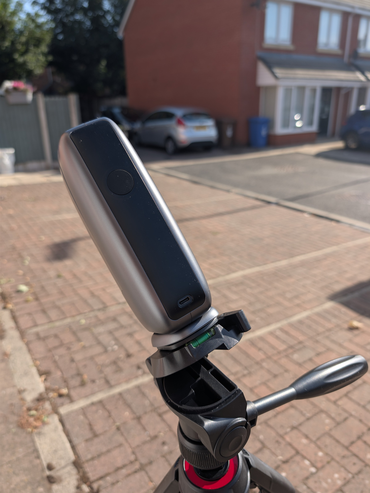
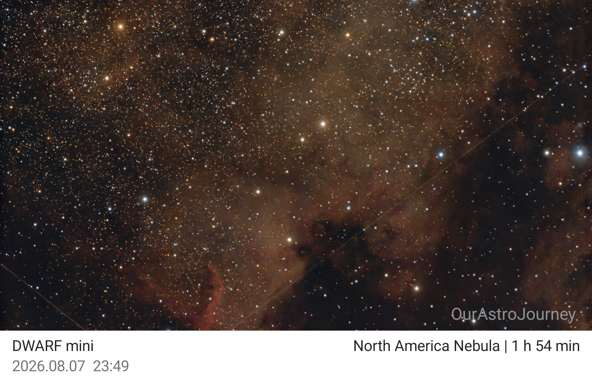

Start Here
Follow a beginner-friendly path to your first setup, first target, and first useful result.
Open Start HereThe Dwarf Mini is a compact smart telescope. It can capture photos and video, and it is controlled through a phone or tablet app.
That makes it useful for a wide range of targets, from birds and everyday wildlife to the Moon, planets, and deep-sky objects.
The Dwarf Mini also processes the final image for many solar system and deep-sky targets, then lets you download the result to your device ready to share.
The app itself includes a number of useful features, and it also gives you access to a community element that makes the experience more social and collaborative.

The setup was quick and simple. You can either scan the QR code from the leaflet that comes in the box or use the app store directly. You then sign in or create an account.
From there, you just follow the on-screen instructions to connect to your telescope.
What you do next depends on when you are observing and what you want to image.
If you are imaging the Sun, the first thing you need to do is extend the lens arm and attach the solar filter before aiming at the Sun.
Then, in the app, you select Live View. In the top-right corner, choose the small planets icon. This is where you can choose the type of target you want to capture.
From there, you can select the solar system for objects inside the Solar System and continue from there.
This is a fairly brief attempt at NGC7000, also known as C20 and more commonly as the North America Nebula.
I used the standard settings across a few different nights. As is typical in the UK, there was plenty of cloud.
One of the great features of the Dwarf Mini is Mega Stack.
If you cannot get a lot of data in one session, this feature lets you combine other sessions on the same target into one improved image.
This is very important because the more data you have, the better the finished image will look. It helps to clear out background noise such as light pollution.
I only managed less than two hours of data in total, and that shows in the image.
With more time, the dust clouds would have been much more visible. There were also three street lights close to where I was imaging, so more data would have helped quite a bit.

I shot these during the 2026 eclipse.
What an amazing day this was. I went to the Keele Observatory eclipse event, and it was busy.
There seemed to be a distinct lack of solar eclipse glasses this year, so I had lots of visitors checking out what I could see.
I had hoped to get lots of images, but it was not an easy task. I kept getting distracted.
The only issues I had with this extended session were that, being a busy public event, there were times when people walked in front of the telescope or knocked the tripod.
I’m only going to cover these features briefly here because I haven’t had enough time to test them properly yet.
Mega Stack is one of my favourite features. It is especially useful in the UK because we do not always get ideal sky conditions, so this is a feature you will likely use a lot.
This feature can be found under the Album section.
The next feature is Stellar Studio.
This is where you can tweak the image a bit to improve it. You can do this manually or in auto mode.
This is also in the Album section.
CoStack and CoMosaic are two features I am looking forward to trying.
CoStack is where you can create or join community projects where up to 25 people can take part. Each user captures the same target with the same settings, and eventually all the images are stacked. Each user gets their own data and the final image.
CoMosaic is a similar idea, but with this feature, as a community you can create a much larger mosaic, allowing you to cover a much bigger area of sky.
I love the idea of both of these features, but I can also see future options that would be useful. For example, being able to create projects where other users can only take part if you have sent them some form of request or private login.
Also, having the option for each individual to share their data would allow everyone to process the entire project outside of the Dwarf app.
You are also able to change the image settings so you can control exposure time, gain, and image count, among others, giving you more control over the final image.
This brings us to one of the most advanced features that can make a complete difference to your imaging: EQ Mode, or equatorial mode, also known as polar alignment.
This feature is not completely necessary, but if you want longer exposures, you do need it.
Without EQ mode, exposure can go up to 30 seconds, but due to Field RotationField rotation is the apparent turning of the sky during a long exposure. An equatorial mount tracks with Earth's rotation, helping keep stars round., it is recommended to stick around 10 to 15 seconds.
With EQ Mode, and in the perfect conditions, this can be extended to 3 minutes, though up to 90 seconds is recommended.
I had so many plans for this smart telescope review, but sadly, the Great British weather had other ideas. So there will be a follow-up further down the line.
So far, I am really impressed with the Dwarf Mini. Not only is it beginner-friendly, but I think it has something for more experienced users too.
You could literally use this right out of the box, day or night (weather permitting). All you need is a flat surface and a clear sky.
The learning curve for this is small. But it is full of features that you will slowly start to want to use to get that better picture. And the app is regularly updated.
I would say this is for anyone. Even kids can use it with some supervision. Because of its small size, it is also great for experienced astrophotographers and easy to keep nearby for those unexpected opportunities.
I did try a CoStack project, but I didn't have much luck. I feel this was more user error than a problem with the app. The project was set up fine and others joined, but when I tried to capture my images, they failed to upload.
A few things I hope to see one day.
On the first attempt, I didn't capture enough images, and the second time I was in the wrong filter mode.
Now, I'm not sure whether you can upload your images over multiple nights, so that may be my mistake. However, using the wrong filter was definitely my mistake.
Most of these improvements are things I would like to see and features I feel would be useful. Others may disagree.